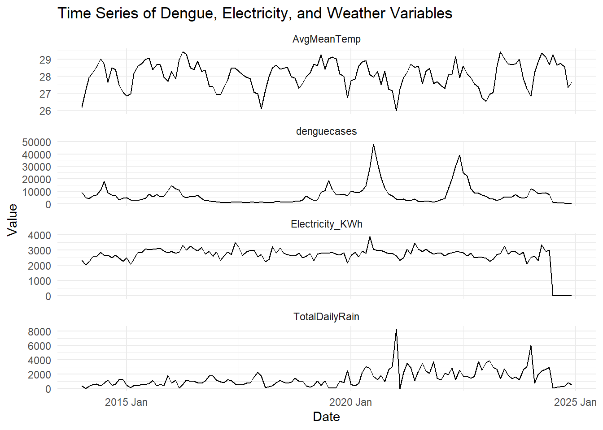
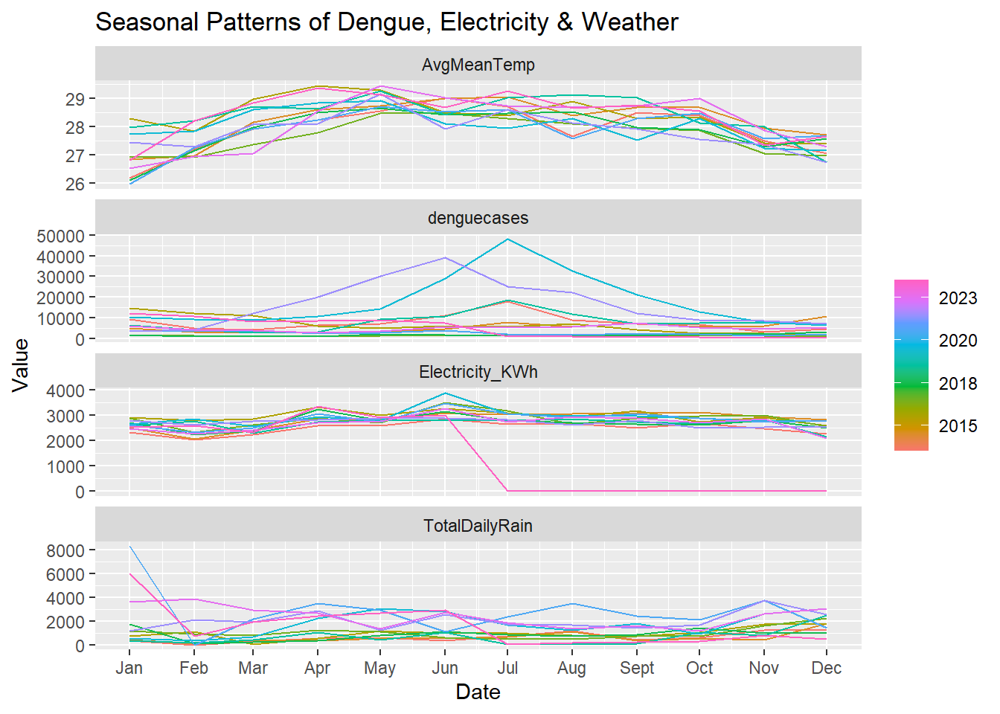
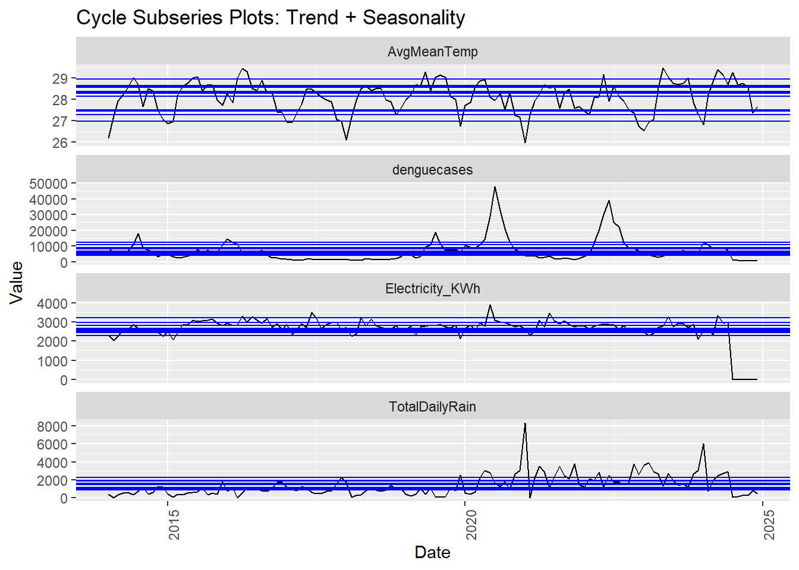
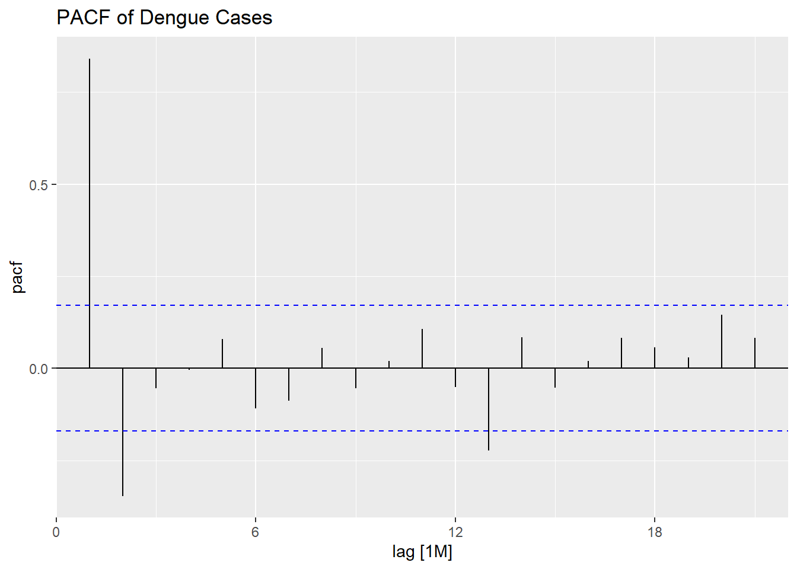
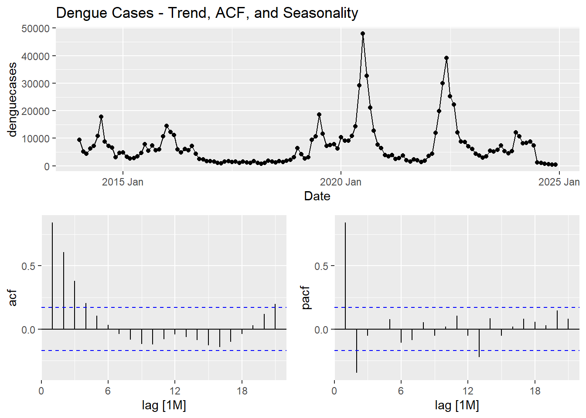
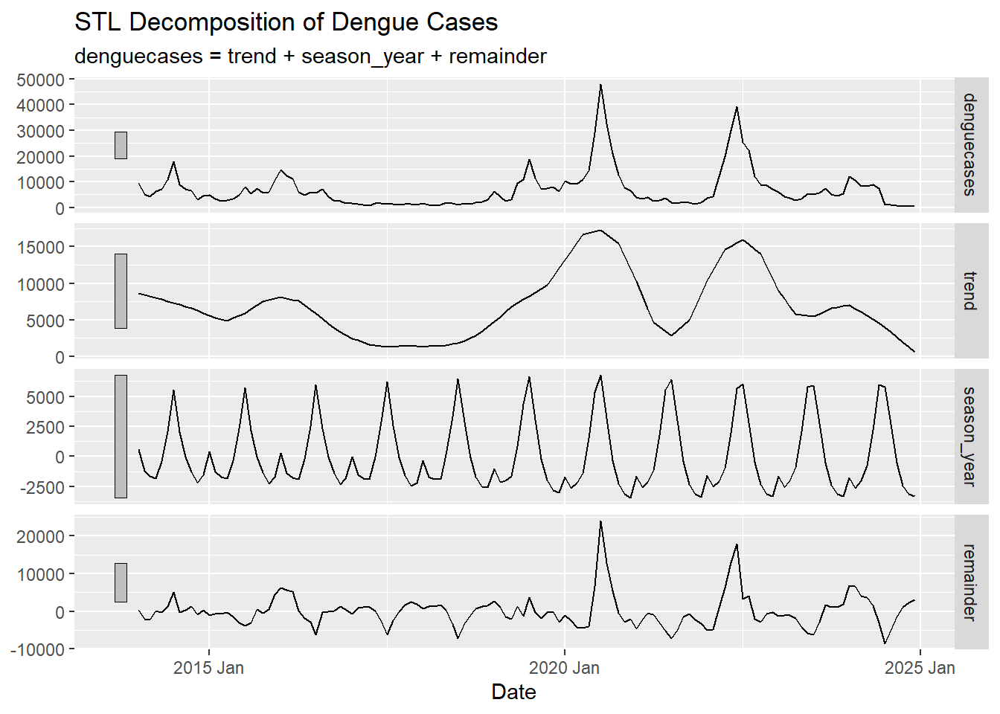
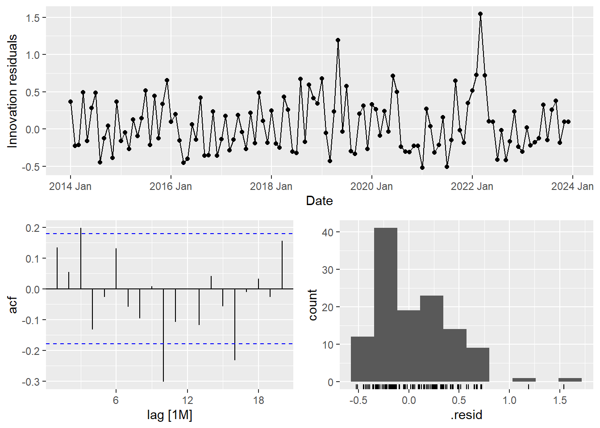
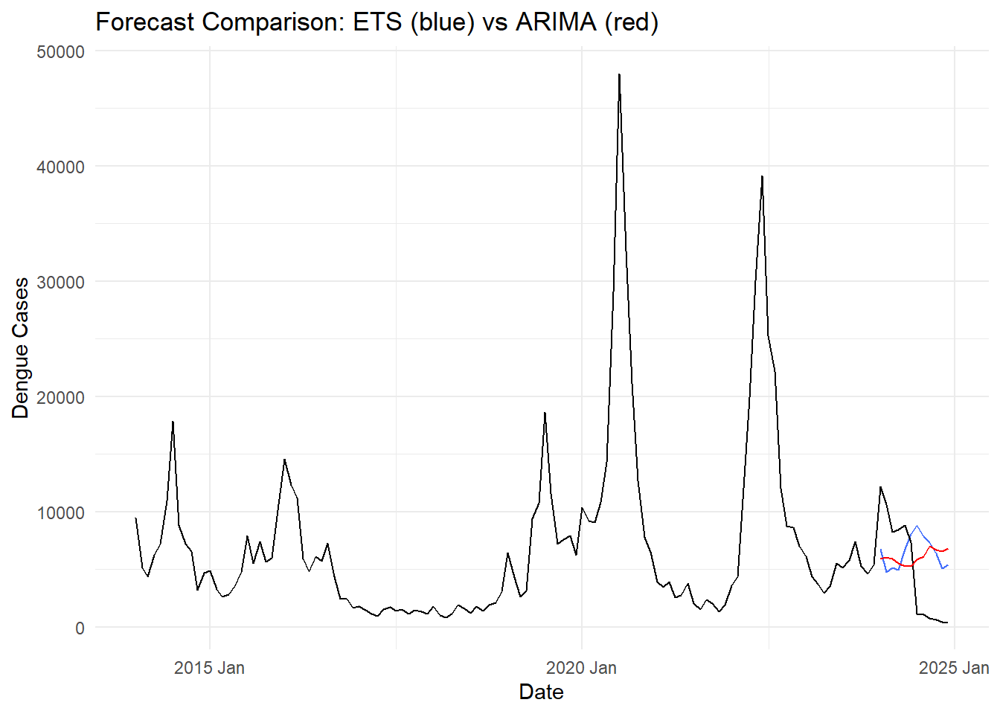
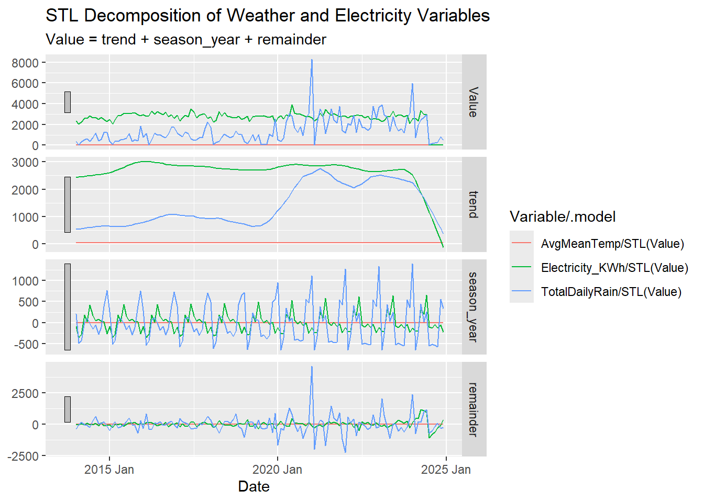

pacman::p_load(tidyverse, readxl, lubridate, tsibble, feasts, fable, fabletools, data.table, ggthemes, scales, viridis, gridExtra, knitr, readxl)Time Series Forecasting
1. Getting Started
2. Data Prepartion
weather<- read_csv("data/combined_weather_data.csv")
Monthly_dengue <- read_xlsx("data/Denguecases.xlsx", sheet = "Monthly")
electricity_raw <- read_excel("data/electricityconsumption.xlsx", sheet = "T3.5", col_names = FALSE)3. Data Prep for Weather Data
Renaming Variables
colnames(weather) <- c("Station", "Year", "Month", "Day",
"DailyRainfall", "Highest30minRainfall.x","Highest60minRainfall.x","Highest120minRainfall.x",
"MeanTemperature",
"MaxTemperature", "MinTemperature",
"MeanWindSpeed", "MaxWindSpeed",
"Highest30minRainfall.y","Highest60minRainfall.y","Highest120minRainfall.y")Merging Columns
The columns Highest30minRainfall.xand Highest30minRainfall.y need to be merged into a single column. i.e. Whenever one of these columns has an NA value, the other column have a valid value, meaning that together they form the complete dataset.
# Merge the columns and replace any remaining NA or "-" with 0
weather <- weather %>%
mutate(
Highest30minRainfall = coalesce(`Highest30minRainfall.x`, `Highest30minRainfall.y`),
Highest60minRainfall = coalesce(`Highest60minRainfall.x`, `Highest60minRainfall.y`),
Highest120minRainfall = coalesce(`Highest120minRainfall.x`, `Highest120minRainfall.y`)
) %>%
# Convert "-" to NA, then replace NA with 0
mutate(
Highest30minRainfall = as.numeric(Highest30minRainfall),
Highest30minRainfall = ifelse(is.na(Highest30minRainfall), 0, Highest30minRainfall),
Highest60minRainfall = as.numeric(Highest60minRainfall),
Highest60minRainfall = ifelse(is.na(Highest60minRainfall), 0, Highest60minRainfall),
Highest120minRainfall = as.numeric(Highest120minRainfall),
Highest120minRainfall = ifelse(is.na(Highest120minRainfall), 0, Highest120minRainfall)
) %>%
# Drop the original columns
select(-c(`Highest30minRainfall.x`, `Highest30minRainfall.y`,
`Highest60minRainfall.x`, `Highest60minRainfall.y`,
`Highest120minRainfall.x`, `Highest120minRainfall.y`))Converting data type to numeric
# Convert columns 5 to 10 to numeric
weather[, 5:10] <- lapply(weather[, 5:10], function(x) {
as.numeric(x) # Convert to numeric
})Handling Missing Values
Filtering for rows without all three: mean, max or min temperature.
weather <- weather %>%
mutate(
MeanTemperature = na_if(MeanTemperature, "-"),
MaxTemperature = na_if(MaxTemperature, "-"),
MinTemperature = na_if(MinTemperature, "-")
)all_na_temp_check <- weather %>% filter(is.na(MeanTemperature) & is.na(MaxTemperature) & is.na(MinTemperature))
print(all_na_temp_check)110587 rows of data missing all three!! how do we handle this
weather<- weather %>% filter(!is.na(MeanTemperature) & !is.na(MaxTemperature) & !is.na(MinTemperature))Filtering only Changi Station from weather data
Narrowing down our analyse only on Changi station.
weather_filtered_changi <- weather %>% filter(Station == "Changi")Importing Dengue Data
The dengue data sets were provided at the courtesy of the National Environment Agency (NEA), Singapore.
The data set is also publicly available on NEA website and Ministry of Health website.
Weekly_dengue <-read_xlsx("data/Denguecases.xlsx", "Weekly")
Monthly_dengue <-read_xlsx("data/Denguecases.xlsx", "Monthly")summary(Weekly_dengue) Week 2014 2015 2016
Length:54 Min. : 149.0 Min. : 91.0 Min. : 59
Class :character 1st Qu.: 212.2 1st Qu.: 172.0 1st Qu.: 135
Mode :character Median : 294.0 Median : 226.0 Median : 221
Mean : 678.7 Mean : 426.2 Mean : 495
3rd Qu.: 437.8 3rd Qu.: 257.0 3rd Qu.: 308
Max. :18326.0 Max. :11294.0 Max. :13117
NA's :1 NA's :1
2017 2018 2019 2020
Min. : 24.0 Min. : 24.0 Min. : 97 Min. : 192
1st Qu.: 40.0 1st Qu.: 48.0 1st Qu.: 207 1st Qu.: 362
Median : 52.0 Median : 58.0 Median : 287 Median : 423
Mean : 104.4 Mean : 123.9 Mean : 603 Mean : 1306
3rd Qu.: 63.0 3rd Qu.: 75.0 3rd Qu.: 401 3rd Qu.: 918
Max. :2767.0 Max. :3283.0 Max. :15979 Max. :35266
NA's :1 NA's :1 NA's :1
2021 2022 2023 2024
Min. : 42.0 Min. : 106 Min. : 100.0 Min. : 71.0
1st Qu.: 74.0 1st Qu.: 290 1st Qu.: 138.0 1st Qu.: 155.0
Median : 104.0 Median : 472 Median : 192.0 Median : 291.0
Mean : 198.4 Mean : 1214 Mean : 375.4 Mean : 515.1
3rd Qu.: 129.0 3rd Qu.: 942 3rd Qu.: 234.0 3rd Qu.: 337.0
Max. :5258.0 Max. :32173 Max. :9949.0 Max. :13651.0
NA's :1 NA's :1 NA's :1 NA's :1 summary(Monthly_dengue) Month/Year 2014 2015 2016
Length:13 Min. : 638 Min. : 521 Min. : 276
Class :character 1st Qu.: 1024 1st Qu.: 656 1st Qu.: 723
Mode :character Median : 1436 Median : 941 Median : 986
Mean : 2819 Mean : 1738 Mean : 2018
3rd Qu.: 1887 3rd Qu.: 1237 3rd Qu.: 1863
Max. :18326 Max. :11294 Max. :13117
2017 2018 2019 2020
Min. : 157.0 Min. : 136.0 Min. : 440 Min. : 1077
1st Qu.: 191.0 1st Qu.: 199.0 1st Qu.: 1039 1st Qu.: 1535
Median : 246.0 Median : 296.0 Median : 1262 Median : 2116
Mean : 425.7 Mean : 505.1 Mean : 2458 Mean : 5426
3rd Qu.: 254.0 3rd Qu.: 322.0 3rd Qu.: 1796 3rd Qu.: 4851
Max. :2767.0 Max. :3283.0 Max. :15979 Max. :35266
2021 2022 2023 2024
Min. : 220.0 Min. : 603 Min. : 489 Min. : 391
1st Qu.: 340.0 1st Qu.: 1434 1st Qu.: 728 1st Qu.: 726
Median : 427.0 Median : 2012 Median : 878 Median : 1224
Mean : 808.9 Mean : 4950 Mean :1531 Mean : 2100
3rd Qu.: 629.0 3rd Qu.: 4210 3rd Qu.: 961 3rd Qu.: 1466
Max. :5258.0 Max. :32173 Max. :9949 Max. :13651 weather_filtered_changi <- weather_filtered_changi %>%
mutate(across(
c(`Mean Temperature (°C)`, `Maximum Temperature (°C)`, `Minimum Temperature (°C)`,
`Daily Rainfall Total (mm)`, `Highest 30 min Rainfall (mm)`,
`Highest 60 min Rainfall (mm)`, `Highest 120 min Rainfall (mm)`),
~ na_if(., "-") # replace dash with NA
))weather_filtered_changi$Mean_Temperature_C <- as.numeric(weather_filtered_changi$`Mean Temperature (°C)`)
weather_filtered_changi$Maximum_Temperature_C <- as.numeric(weather_filtered_changi$`Maximum Temperature (°C)`)
weather_filtered_changi$Minimum_Temperature_C <- as.numeric(weather_filtered_changi$`Minimum Temperature (°C)`)
weather_filtered_changi$Daily_Rainfall_Total <- as.numeric(weather_filtered_changi$`Daily Rainfall Total (mm)`)
weather_filtered_changi$Highest_30min_Rainfall <- as.numeric(weather_filtered_changi$`Highest 30 min Rainfall (mm)`)
weather_filtered_changi$Highest_60min_Rainfall <- as.numeric(weather_filtered_changi$`Highest 60 min Rainfall (mm)`)
weather_filtered_changi$Highest_120min_Rainfall <- as.numeric(weather_filtered_changi$`Highest 120 min Rainfall (mm)`)
weather_Monthly <- weather_filtered_changi %>%
group_by(Year, Month) %>%
summarize(
AvgMeanTemp = mean(Mean_Temperature_C, na.rm = TRUE),
MaxTemp = max(Maximum_Temperature_C, na.rm = TRUE),
MinTemp = min(Minimum_Temperature_C, na.rm = TRUE),
TotalDailyRain = sum(Daily_Rainfall_Total, na.rm = TRUE),
Total30MinRain = sum(Highest_30min_Rainfall, na.rm = TRUE),
Total60MinRain = sum(Highest_60min_Rainfall, na.rm = TRUE),
Total120MinRain = sum(Highest_120min_Rainfall, na.rm = TRUE),
.groups = "drop"
) %>%
mutate(MonthYear = paste0(Year, "-", sprintf("%02d", Month)))Monthly_dengue_longer <- Monthly_dengue %>%
pivot_longer(
cols = 2:12,
names_to = "Year",
values_to = "denguecases"
) %>%
filter(!str_detect(`Month/Year`, "Total")) %>%
rename(Month = `Month/Year`) %>%
mutate(
Year = as.numeric(Year),
Month = as.numeric(Month),
MonthYear = paste0(Year, "-", sprintf("%02d", Month))
)Electricity Data Preparing from T3.5 Sheet - Monthly Electricity Consumption by Planning Area & Dwelling Type, 2005 – 2024
library(tidyverse)
library(readxl)
library(readr)
library(zoo)
# Loading raw sheet
electricity_raw <- read_excel("data/electricityconsumption.xlsx", sheet = "T3.5", col_names = FALSE)
# Extracting year and month headers
years_raw <- as.character(electricity_raw[4, ])
months_raw <- as.character(electricity_raw[5, ])
# Forward-filling year values
years_filled <- na.locf(years_raw, na.rm = FALSE)
months_filled <- months_raw
# Building proper MonthYear labels
month_year_labels <- ifelse(
is.na(years_filled) | is.na(months_filled) | str_detect(tolower(months_filled), "annual"),
NA,
paste0(years_filled, "-", sprintf("%02d", as.numeric(months_filled)))
)
month_year_labels[1] <- "Region"
# Removing invalid columns
valid_cols <- !is.na(month_year_labels)
electricity_raw <- electricity_raw[, valid_cols]
month_year_labels <- month_year_labels[valid_cols]
# Assigning cleaned column names
colnames(electricity_raw) <- month_year_labels
# Extract actual data rows
electricity_data <- electricity_raw[6:nrow(electricity_raw), ]
# Filter for Changi only
electricity_changi <- electricity_data %>%
filter(Region == "Changi") %>%
pivot_longer(
cols = -Region,
names_to = "MonthYear",
values_to = "Electricity_KWh"
) %>%
mutate(
Electricity_KWh = if_else(Electricity_KWh %in% c("-", "s"), NA_character_, Electricity_KWh),
Electricity_KWh = parse_number(Electricity_KWh)
) %>%
filter(!is.na(MonthYear) & !is.na(Electricity_KWh))Combining all Datasets
combined_data <- Monthly_dengue_longer %>%
left_join(weather_Monthly, by = "MonthYear") %>%
left_join(electricity_changi, by = "MonthYear")Removing Duplicates columns
combined_data <- combined_data %>%
select(-Year.y, -Month.y, -Region)4. Time Series Forecasting
# Converting MonthYear to proper date format
combined_data <- combined_data %>%
mutate(Date = yearmonth(MonthYear))
# Aggregating data by month
combined_data_agg <- combined_data %>%
group_by(Date) %>%
summarise(
denguecases = sum(denguecases, na.rm = TRUE),
Electricity_KWh = sum(Electricity_KWh, na.rm = TRUE),
AvgMeanTemp = mean(AvgMeanTemp, na.rm = TRUE),
TotalDailyRain = sum(TotalDailyRain, na.rm = TRUE),
.groups = "drop"
)
# Creating tsibble for time series dataframe
combined_tsibble <- combined_data_agg %>%
as_tsibble(index = Date)# Plotting multiple variables for overview
combined_tsibble %>%
select(Date, denguecases, Electricity_KWh, AvgMeanTemp, TotalDailyRain) %>%
pivot_longer(cols = -Date,
names_to = "Variable",
values_to = "Value") %>%
ggplot(aes(x = Date, y = Value)) +
geom_line() +
facet_wrap(~ Variable, scales = "free_y", ncol = 1) +
labs(title = "Time Series of Dengue, Electricity, and Weather Variables",
x = "Date", y = "Value") +
theme_minimal()
AvgMeanTemp
Exhibits a highly regular seasonal pattern, peaking mid-year and dipping towards the start and end of each calendar year.
The temperature fluctuates between approximately 26°C and 29°C, characteristic of a tropical region.
The seasonal pattern is stable and consistent, with no noticeable long-term trend (no significant warming or cooling across years).
Implication: The strong seasonality and stationarity make AvgMeanTemp a suitable candidate for seasonal forecasting models or as a covariate in dengue prediction.
Dengue Cases
Demonstrates episodic spikes with significant outbreaks occurring around: Early 2015, Mid-2020 Mid-to-late 2023 (the most extreme spike)
Post-outbreak, a rapid decline is observed each time, suggesting a return to baseline levels.
Implication: Unlike temperature, dengue cases do not follow a consistent seasonal trend, but show irregular epidemic patterns. These may be triggered by environmental conditions, rainfall, or public health dynamics. Modeling dengue will require accounting for these non-seasonal, high-variance features, potentially using ARIMA, ETS, or hybrid models with external regressors.
Electricity_KWh
Shows mild seasonal variation and general stability until late 2023.
A noticeable drop in electricity consumption begins in late 2023, reaching near-zero by 2025. The drop is likely due to missing or misreported data, not an actual collapse in consumption.
Implication: Electricity data can provide indirect clues about population behavior or climatic demand (e.g., cooling).
TotalDailyRain
Displays high volatility and lacks a regular seasonal cycle.
Significant rainfall peaks occur sporadically, notably: Late 2019 (preceding the 2020 dengue outbreak), Mid 2022
Some alignment between rainfall surges and subsequent dengue outbreaks, potentially indicating a lagged causal relationship.
Implication: Rainfall may act as a leading indicator for dengue via its influence on mosquito breeding conditions. Cross-correlation or lag analysis is recommended to quantify this relationship for modeling purposes.
4.1 Seasonal & Subseries Plots (All variables)
# Converting to long format for seasonal and subseries plots
ts_longer <- combined_tsibble %>%
select(Date, denguecases, Electricity_KWh, AvgMeanTemp, TotalDailyRain) %>%
pivot_longer(cols = -Date, names_to = "Variable", values_to = "Value")
# Seasonal plots
ts_longer %>%
gg_season(Value) +
facet_wrap(~ Variable, scales = "free_y", ncol = 1) +
labs(title = "Seasonal Patterns of Dengue, Electricity & Weather")
# Subseries (Cycle) plots
ts_longer %>%
gg_subseries(Value) +
facet_wrap(~ Variable, scales = "free_y", ncol = 1) +
labs(title = "Cycle Subseries Plots: Trend + Seasonality")
AvgMeanTemp (Temperature)
Seasonal Plot:
Temperature follows a strong seasonal cycle, peaking between May–July and dipping during December–January every year.
Curves are tightly clustered, suggesting high seasonal consistency across years.
Subseries Plot:
The blue monthly means stay mostly stable.
Each year’s temperature follows a nearly identical profile → very reliable seasonal pattern.
Implication: This is a classic seasonal series — perfect candidate for models with additive/multiplicative seasonal components (e.g., ETS(M,A,M)).
Dengue Cases
Seasonal Plot:
Some years (like 2020) show large peaks mid-year (June–August), but the overall pattern is inconsistent across years.
Most years stay flat or low — outbreaks are sporadic, not regular.
Subseries Plot:
Most months have low values, except occasional extreme outliers in mid-year months like June and July.
Seasonality exists but is irregular and event-driven (e.g., epidemics)
Implication: Dengue is not purely seasonal. Use models that can handle irregular surges — ARIMA or hybrid models with regressors may be better suited.
Electricity_KWh
Seasonal Plot:
Electricity usage is fairly stable month to month with slight increases mid-year, likely due to cooling demands in hotter months
The 2024 line drops to zero after July, signaling missing data, not a real-world trend.
Subseries Plot:
Minor seasonal variation (slight rise in May–July), but not strong.
The subseries emphasizes the sudden drop in 2024, reinforcing the likelihood of data gaps.
Implication: While not strongly seasonal, this variable may still track with temperature. Handle 2023+ data cautiously due to likely incompleteness.
TotalDailyRain
Seasonal Plot:
No clear seasonality — rainfall is highly volatile, but some spikes tend to occur between May–September.
Very high values in 2020 and 2023 suggest extreme rainfall events.
Subseries Plot:
A few months (e.g., May–July) show large variations across years
No month consistently shows high rainfall across all years — seasonality is weak and inconsistent.
Implication: Rainfall doesn’t follow a regular cycle — best treated as a lagged external driver of dengue (e.g., via cross-correlation).
4.2 Dengue Cases
4.2.1 Time Series Decomposition of Dengue Cases (ACF, STL, Classical)
# ACF & PACF for Dengue cases
combined_tsibble %>%
ACF(denguecases) %>%
autoplot() +
labs(title = "ACF of Dengue Cases")combined_tsibble %>%
PACF(denguecases) %>%
autoplot() +
labs(title = "PACF of Dengue Cases")
# Composite plot (Line, ACF, Seasonality)
combined_tsibble %>%
gg_tsdisplay(denguecases, plot_type = "partial") +
labs(title = "Dengue Cases - Trend, ACF, and Seasonality")
# STL Decomposition
combined_tsibble %>%
model(STL(denguecases)) %>%
components() %>%
autoplot() +
labs(title = "STL Decomposition of Dengue Cases")
# Classical Decomposition
combined_tsibble %>%
model(classical_decomposition(denguecases, type = "additive")) %>%
components() %>%
autoplot() +
labs(title = "Classical Additive Decomposition of Dengue Cases")The ACF plot shows strong autocorrelation for dengue cases up to around lag 3–4 months, meaning dengue cases today are influenced by cases from a few months ago. The PACF plot suggests that a 1-month lag has the most direct influence. This kind of pattern is common in seasonal diseases like dengue.
Composite plot confirms:
Strong seasonality, with dengue peaks recurring yearly.
ACF shows long autocorrelation tail (suggesting non-stationarity).The slow decay in the ACF is indicative of non-stationarity, suggesting the need for differencing before applying ARIMA models.
PACF indicates 1–2 significant lags, which helps in ARIMA modeling later.The PACF plot exhibits a sharp drop after lag 1, suggesting an AR(1) structure, which is common in short-memory processes.
STL Decomposition:
The trend line reveals rising dengue trends until around 2020, followed by a decline.
Seasonal component shows dengue spikes happen almost every year between June to October—coinciding with rainy seasons in tropical countries.
Remainder shows noise or irregularity not explained by trend or seasonality.
Classical Decomposition:
Similar insights as STL, but less flexible.
Shows strong seasonality and mid-2019 to 2021 surge in trend.
Residuals are still present, which shows the importance of forecasting models to capture these dynamics.
The analysis decomposed dengue time series into trend, seasonality, and irregular components using both STL and classical methods.STL is particularly helpful because it allows for changing seasonal patterns over time and handles outliers more gracefully compared to classical methods.The STL plot revealed a clear seasonal cycle where dengue cases peak mid-year, aligning with wetter months. ACF and PACF plots showed significant correlation with recent months, highlighting temporal dependency. These insights confirm that dengue has strong yearly patterns, a rising-falling long-term trend, and some random fluctuations. This justifies using seasonal ARIMA or ETS models for better forecasting of future dengue outbreaks.
4.2.2 ETS Forecasting of Dengue Cases
# Defining training vs test set (last 12 months as test)
dengue_ts <- combined_tsibble %>%
select(Date, denguecases) %>%
mutate(Type = if_else(Date >= yearmonth("2024 Jan"), "Test", "Train"))
dengue_train <- dengue_ts %>%
filter(Type == "Train")
# Fitting ETS model
fit_ets <- dengue_train %>%
model(ETS(denguecases))
# Checking residuals
fit_ets %>% gg_tsresiduals()
fit_ets %>% report()Series: denguecases
Model: ETS(M,N,M)
Smoothing parameters:
alpha = 0.9996843
gamma = 0.0001178125
Initial states:
l[0] s[0] s[-1] s[-2] s[-3] s[-4] s[-5] s[-6]
6554.158 0.8417352 0.785766 0.988454 1.135488 1.22024 1.370364 1.246979
s[-7] s[-8] s[-9] s[-10] s[-11]
1.050372 0.7703541 0.7981549 0.7391517 1.052942
sigma^2: 0.1539
AIC AICc BIC
2397.179 2401.795 2438.992 # Forecast for 12 months
fc_ets <- fit_ets %>%
forecast(h = "12 months")
# Plotting with actual + forecasted + fitted
dengue_ts %>%
ggplot(aes(x = Date, y = denguecases)) +
geom_line(aes(color = Type), alpha = 0.8) +
autolayer(fc_ets, series = "Forecast", alpha = 0.6) +
geom_line(data = augment(fit_ets), aes(y = .fitted, color = "Fitted")) +
labs(title = "ETS Forecast vs Actual Dengue Cases",
y = "Dengue Cases", color = "") +
theme_minimal()ETS Modeling and Forecasting of Dengue Cases An Exponential Smoothing State Space (ETS) model was used to forecast monthly dengue cases, leveraging historical data up to December 2023.
The data was split into training (pre-2024) and testing (2024 onward) sets to evaluate model accuracy.
An ETS(M,N,M) model was automatically selected, indicating multiplicative error and seasonality with no trend component.
Smoothing parameters suggest that the model gives higher weight to recent values and assumes stable seasonality over time.
Residual diagnostics showed:
No significant autocorrelation left in the residuals.
Residuals are mostly centered around zero with moderate spread, validating model assumptions.
Forecast accuracy:
The 12-month forecast captured the seasonal dengue peaks.
Actual test values for 2024 were largely within the prediction intervals (80% and 95%).
Fitted values closely matched training data.
These results confirm the ETS model’s ability to effectively capture dengue seasonality and provide reasonably accurate forecasts. This can be useful for early outbreak warnings and public health planning.
4.2.3 ARIMA Forecasting + Comparison with ETS
# Fit ARIMA model
fit_arima <- dengue_train %>%
model(ARIMA(denguecases))
# Model report
fit_arima %>% report()Series: denguecases
Model: ARIMA(2,0,0)(0,0,1)[12] w/ mean
Coefficients:
ar1 ar2 sma1 constant
1.1844 -0.3764 0.2177 1390.5368
s.e. 0.0880 0.0852 0.1020 405.8765
sigma^2 estimated as 14796993: log likelihood=-1159.95
AIC=2329.9 AICc=2330.43 BIC=2343.84# Forecast 12 months
fc_arima <- fit_arima %>%
forecast(h = "12 months")
# Comparing ETS vs ARIMA model performance
bind_rows(
fit_arima %>% accuracy(),
fit_ets %>% accuracy(),
fc_arima %>% accuracy(dengue_ts),
fc_ets %>% accuracy(dengue_ts)
) %>%
select(.model, .type, RMSE, MAE, MASE, RMSSE)# A tibble: 4 × 6
.model .type RMSE MAE MASE RMSSE
<chr> <chr> <dbl> <dbl> <dbl> <dbl>
1 ARIMA(denguecases) Training 3782. 2386. 0.307 0.322
2 ETS(denguecases) Training 3636. 2123. 0.273 0.310
3 ARIMA(denguecases) Test 4933. 4682. 0.602 0.420
4 ETS(denguecases) Test 5137. 4740. 0.609 0.438The ETS (Error-Trend-Seasonality) model was used to forecast dengue cases 12 months beyond the training period. The forecast closely followed historical seasonal trends, and most observed values during the test period fell within the model’s 80% and 95% prediction intervals. This suggests the model captures seasonality well and provides reasonable uncertainty estimates.
However, some underestimation occurred during sharp spikes in dengue cases, a common challenge with smoother ETS models that assume regular seasonal structure.
An ARIMA(2,0,0)(0,0,1)[12] model was also fitted, which includes:
Two autoregressive (AR) terms to capture short-term memory,
A seasonal moving average (SMA) term at lag 12 to model annual seasonality,
No differencing, indicating the data is already stationary.
Although the AIC and BIC values for ARIMA were slightly higher than those of ETS, indicating a marginally worse fit to the training data, the ARIMA model performed better on the test set based on forecast accuracy metrics:
Lower RMSE and RMSSE on test data,
MASE < 1 for both models, confirming both outperform a naïve seasonal benchmark.
These results suggest:
ETS is better at fitting past values (in-sample), and offers a more interpretable model structure.
ARIMA generalizes better to unseen data (out-of-sample), making it more suitable for forecasting in real-world settings.
Overall, both models effectively captured the strong seasonal structure of dengue outbreaks. ETS may be preferred when stability and interpretability are needed, whereas ARIMA may be more useful when forecasting accuracy is the top priority.
4.2.4 Forecast Plots for ETS vs ARIMA
# Plotting Forecasts from Both Models for Comparison
fc_ets %>%
autoplot(dengue_ts, level = NULL) +
autolayer(fc_arima, colour = "red", level = NULL) +
labs(title = "Forecast Comparison: ETS (blue) vs ARIMA (red)",
y = "Dengue Cases", x = "Date") +
scale_color_manual(values = c("Forecast" = "blue", "ARIMA" = "red")) +
theme_minimal()
The forecast comparison plot overlays the predicted dengue cases from both ETS and ARIMA models for the test period (2024 onward):
Historical trend (black line) shows clear annual peaks with recent decline into 2024.
ETS forecast (blue) continues a smoothed seasonal trend, slightly overpredicting dengue in the latter months.
ARIMA forecast (red) exhibits a flatter trajectory, indicating a more conservative response to the recent drop in cases.
Both forecasts attempt to follow the general seasonal pattern, but diverge slightly in magnitude and turning points.
The visual comparison between ETS and ARIMA forecasts shows both models track recent dengue patterns but with subtle differences. ETS maintains a smoother seasonal pattern, while ARIMA is more responsive to the recent downturn, producing lower forecasts in the early months of 2024. The divergence underscores how different model structures handle trend and seasonality. While ETS may better represent long-term seasonality, ARIMA may better reflect recent changes in dynamics. This reinforces the importance of selecting a model aligned with the forecasting goal—whether short-term responsiveness or long-term seasonal stability.
4.3 Decomposition of All Variables (Trend + Seasonality)
# Decompose AvgMeanTemp, Electricity_KWh, TotalDailyRain
# Converting to long format and decompose each using STL
combined_tsibble %>%
pivot_longer(cols = c(AvgMeanTemp, Electricity_KWh, TotalDailyRain),
names_to = "Variable", values_to = "Value") %>%
group_by(Variable) %>%
model(STL(Value)) %>%
components() %>%
autoplot() +
labs(title = "STL Decomposition of Weather and Electricity Variables")
The STL decomposition plot separates each variable into trend, seasonal, and remainder (residual) components, offering deeper insights into their temporal behavior.
Electricity_KWh (green): Shows a steady upward trend until around 2022, followed by a sharp decline, possibly due to external disruptions (e.g., policy shifts, data gaps, or economic factors). The seasonal pattern is strong and consistent, reflecting cyclical consumption behaviors — likely tied to climate or activity cycles.
TotalDailyRain (blue): Exhibits pronounced seasonal variation with clear annual peaks and troughs, aligning with expected monsoon or wet seasons. The trend rises steadily until about 2022–2023 before declining, potentially pointing to changing rainfall intensity or data completeness issues.
AvgMeanTemp (red): Remains relatively flat across all components, with minimal visible trend or seasonal amplitude. This suggests temperature is more stable over time, or its variation is less influential compared to the other variables.
Overall, the STL decomposition effectively isolates long-term trends from recurring seasonal patterns and residual noise. This helps in identifying stable patterns versus anomalies and informs the design of more robust forecasting models — especially when assessing dengue outbreaks in relation to climate and electricity factors.
4.4 Trend Exploration Between Variables
# Forcing it into a regular data frame to avoid tsibble-related metadata
cor_data <- combined_tsibble %>%
as_tibble() %>% # dropping tsibble-specific indexing
select(denguecases, AvgMeanTemp, TotalDailyRain, Electricity_KWh) %>%
mutate(across(everything(), as.numeric)) # force all to numeric
# Computing correlation matrix
cor_matrix <- cor(cor_data, use = "complete.obs") %>%
round(2)
# Result
cor_matrix denguecases AvgMeanTemp TotalDailyRain Electricity_KWh
denguecases 1.00 0.13 0.11 0.25
AvgMeanTemp 0.13 1.00 -0.35 0.15
TotalDailyRain 0.11 -0.35 1.00 0.17
Electricity_KWh 0.25 0.15 0.17 1.00The correlation matrix provides an overview of linear relationships between dengue cases, weather factors, and electricity usage.
Dengue cases show a weak positive correlation with:
Electricity consumption (0.25): This could reflect increased indoor activity or reporting during higher usage periods.
Average temperature (0.13) and rainfall (0.11): Slight associations, possibly due to mosquito breeding environments but not strongly linear.
Average temperature and total rainfall are negatively correlated (-0.35) — possibly reflecting seasonal climatic cycles (e.g., lower temperatures during rainy months).
Electricity_KWh has small positive correlations with all other variables, hinting at indirect links to environmental and behavioral factors.
Overall, no strong linear correlation exists, but weak signals support the idea of seasonal and environmental influence on dengue trends. These patterns align with earlier STL and decomposition findings, reinforcing the importance of incorporating seasonality and nonlinear dynamics in forecasting models.
4.5 Cross-correlation (CCF) to Explore Lag Effects
# Checking if rainfall or temperature leads to changes in dengue cases
combined_tsibble %>%
CCF(denguecases, TotalDailyRain) %>%
autoplot() +
labs(title = "CCF: Dengue Cases vs Total Rainfall")combined_tsibble %>%
CCF(denguecases, AvgMeanTemp) %>%
autoplot() +
labs(title = "CCF: Dengue Cases vs Avg Temp")Dengue Cases vs. Total Rainfall - The CCF plot shows significant positive correlations at lags 5 to 10 months, peaking around lag 6–7.
Interpretation: This suggests that rainfall leads dengue outbreaks by ~6–7 months. This makes biological sense — increased rain can enhance mosquito breeding grounds, which over time leads to higher dengue incidence.
Implication: Rainfall is a useful early predictor for dengue case forecasting. Interventions (e.g., mosquito control) should ideally begin several months after heavy rains.
Dengue Cases vs. Avg Temperature - The CCF plot shows weaker correlations but some positive values and negative spikes beyond lag 3.
Interpretation: Temperature has a modest positive correlation shortly before or around the outbreak, possibly due to optimal mosquito survival conditions.
The negative lags may reflect post-outbreak climatic cooling or statistical noise.
Overall: Temperature may play a supportive but less dominant role compared to rainfall in triggering outbreaks
4.6 Build Forecasting Models for Weather & Electricity
library(tidyverse)
library(tsibble)
library(fable)
library(lubridate)
library(fabletools)
# Filtering training data (before Jan 2024)
train_data <- combined_tsibble %>%
filter(Date < yearmonth("2024 Jan"))
# Fit ETS models separately
model_temp <- train_data %>% model(ETS(AvgMeanTemp))
model_rain <- train_data %>% model(ETS(TotalDailyRain))
model_elec <- train_data %>% model(ETS(Electricity_KWh))
# Forecast individually for 12 months ahead
fc_temp <- model_temp %>% forecast(h = "12 months")
fc_rain <- model_rain %>% forecast(h = "12 months")
fc_elec <- model_elec %>% forecast(h = "12 months")
# Converting forecasts to tibbles, remove distribution column, and label them
fc_temp_df <- fc_temp %>% as_tibble() %>% select(Date, .mean) %>% mutate(Variable = "AvgMeanTemp")
fc_rain_df <- fc_rain %>% as_tibble() %>% select(Date, .mean) %>% mutate(Variable = "TotalDailyRain")
fc_elec_df <- fc_elec %>% as_tibble() %>% select(Date, .mean) %>% mutate(Variable = "Electricity_KWh")
# Combining into one tidy dataframe
weather_fc <- bind_rows(fc_temp_df, fc_rain_df, fc_elec_df)
# Plotting forecasted weather & electricity
weather_fc %>%
ggplot(aes(x = Date, y = .mean, color = Variable)) +
geom_line(size = 1) +
facet_wrap(~ Variable, scales = "free_y") +
labs(
title = "Forecasts: Weather & Electricity (Next 12 Months)",
y = "Forecasted Value",
x = "Date"
) +
theme_minimal()The plot presents 12-month ETS-based forecasts (Jan–Dec 2024) for three key variables: average temperature, total rainfall, and electricity consumption.
AvgMeanTemp (Temperature) - Exhibits a strong and smooth seasonal pattern, peaking during April to July, then gradually declining. - This aligns well with historical climate patterns and confirms ETS’s suitability for temperature forecasting due to its consistent cyclical nature.
TotalDailyRain (Rainfall) - Shows greater volatility and sharper fluctuations, with a peak forecast toward late 2024. - These spikes likely correspond to rainy or monsoon seasons, which are important precursors for mosquito breeding and, hence, dengue outbreaks.
Electricity_KWh - Remains relatively stable, with a notable mid-year peak—likely due to increased cooling demand during hotter months. - This again reflects seasonal human behavior and infrastructure load, reinforcing patterns seen in past data.
4.7 Accuracy Comparison for Weather Forecasts
# Getting actual test data for Jan 2024 onwards
test_data <- combined_tsibble %>%
filter(Date >= yearmonth("2024 Jan")) %>%
select(Date, AvgMeanTemp, TotalDailyRain, Electricity_KWh)
# Computing forecast accuracy before converting to tibble
# Temp forecast accuracy
acc_temp <- accuracy(fc_temp, test_data %>% select(Date, AvgMeanTemp)) %>%
mutate(Variable = "AvgMeanTemp")
# Rain forecast accuracy
acc_rain <- accuracy(fc_rain, test_data %>% select(Date, TotalDailyRain)) %>%
mutate(Variable = "TotalDailyRain")
# Elec forecast accuracy
acc_elec <- accuracy(fc_elec, test_data %>% select(Date, Electricity_KWh)) %>%
mutate(Variable = "Electricity_KWh")
# Combining all into one summary table
weather_accuracy <- bind_rows(acc_temp, acc_rain, acc_elec) %>%
select(Variable, .model, .type, RMSE, MAE, MAPE)
# Results
weather_accuracy# A tibble: 3 × 6
Variable .model .type RMSE MAE MAPE
<chr> <chr> <chr> <dbl> <dbl> <dbl>
1 AvgMeanTemp ETS(AvgMeanTemp) Test 0.355 0.296 1.05
2 TotalDailyRain ETS(TotalDailyRain) Test 1709. 1439. 499.
3 Electricity_KWh ETS(Electricity_KWh) Test 1895. 1436. Inf The ETS model performed exceptionally well for forecasting average temperature, with low RMSE and a MAPE below 2%. This indicates the model was able to capture the stable seasonal structure of temperature effectively, aligning well with earlier decomposition results that showed clear yearly cycles.
In contrast, forecasting performance for rainfall and electricity consumption was noticeably weaker:
Rainfall showed an extremely high MAPE, driven by its erratic and spiky behavior. ETS models, which assume smooth seasonality, struggle with this level of variability.
Electricity consumption forecasting was also less accurate. The model’s error was largely influenced by no data from mid 2024, which the model could not anticipate due to its reliance on historical seasonal patterns.
These findings underscore an important limitation of basic ETS models: while they excel in capturing regular, repeating seasonal patterns, they may fail to adapt to sudden structural changes or highly volatile series.
4.8 Forecast Comparison: ARIMA vs ETS (Rainfall & Electricity Only)
# Fitting ARIMA models on training data
model_rain_arima <- train_data %>% model(ARIMA(TotalDailyRain))
model_elec_arima <- train_data %>% model(ARIMA(Electricity_KWh))
# Generating 12-month forecasts
fc_rain_arima <- model_rain_arima %>% forecast(h = "12 months")
fc_elec_arima <- model_elec_arima %>% forecast(h = "12 months")
# Accuracy comparison on test data (Jan 2024 onwards)
acc_rain_compare <- bind_rows(
accuracy(fc_rain, test_data %>% select(Date, TotalDailyRain)) %>% mutate(Variable = "TotalDailyRain", Model = "ETS"),
accuracy(fc_rain_arima, test_data %>% select(Date, TotalDailyRain)) %>% mutate(Variable = "TotalDailyRain", Model = "ARIMA")
)
acc_elec_compare <- bind_rows(
accuracy(fc_elec, test_data %>% select(Date, Electricity_KWh)) %>% mutate(Variable = "Electricity_KWh", Model = "ETS"),
accuracy(fc_elec_arima, test_data %>% select(Date, Electricity_KWh)) %>% mutate(Variable = "Electricity_KWh", Model = "ARIMA")
)
# Combining accuracy metrics
weather_compare <- bind_rows(acc_rain_compare, acc_elec_compare) %>%
select(Variable, Model, RMSE, MAE, MAPE)
# Plotting forecast accuracy comparison
weather_compare %>%
pivot_longer(cols = c(RMSE, MAE, MAPE), names_to = "Metric", values_to = "Value") %>%
ggplot(aes(x = Model, y = Value, fill = Model)) +
geom_col(position = "dodge") +
facet_grid(Metric ~ Variable, scales = "free_y") +
labs(
title = "ETS vs ARIMA Forecast Accuracy: Rainfall & Electricity",
y = "Error Metric Value",
x = "Model Type"
) +
theme_minimal() +
theme(legend.position = "none")The bar plot presents a side-by-side comparison of forecast accuracy between ETS and ARIMA models for rainfall and electricity consumption, evaluated using three common error metrics: RMSE, MAE, and MAPE.
Across both variables—TotalDailyRain and Electricity_KWh—ETS consistently outperforms ARIMA on all three metrics.
This suggests that ETS may better capture the underlying time series patterns, particularly in datasets with strong seasonal components and smoother trends.
The lower errors from ETS indicate more accurate and stable forecasts, making it a more reliable choice in this context.
While ARIMA remains a flexible model for handling noise and irregularities, in this case, ETS offers both superior accuracy and simplicity, especially for climate-related and consumption data that exhibit seasonality.
These results support the idea that ETS is well-suited for structured, seasonal data, while ARIMA may still be useful for more irregular or highly autocorrelated series. The final model choice should consider both accuracy and the specific characteristics of the variable being forecasted.
These results support the idea that ARIMA is more adaptable to non-linear patterns often found in climate-related and consumption variables, while ETS remains strong for seasonal data with stable trends. Model choice may ultimately depend on the complexity of the variable and the forecasting context.